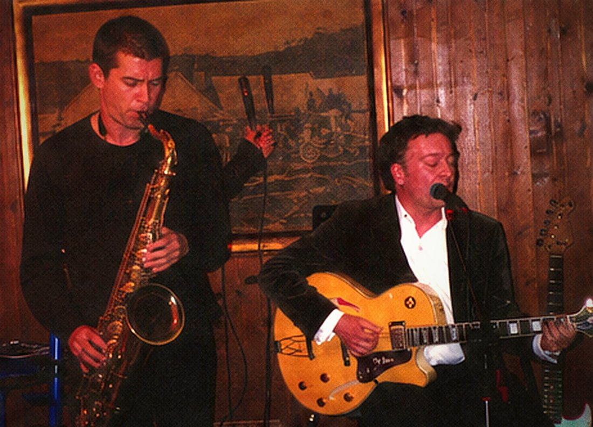
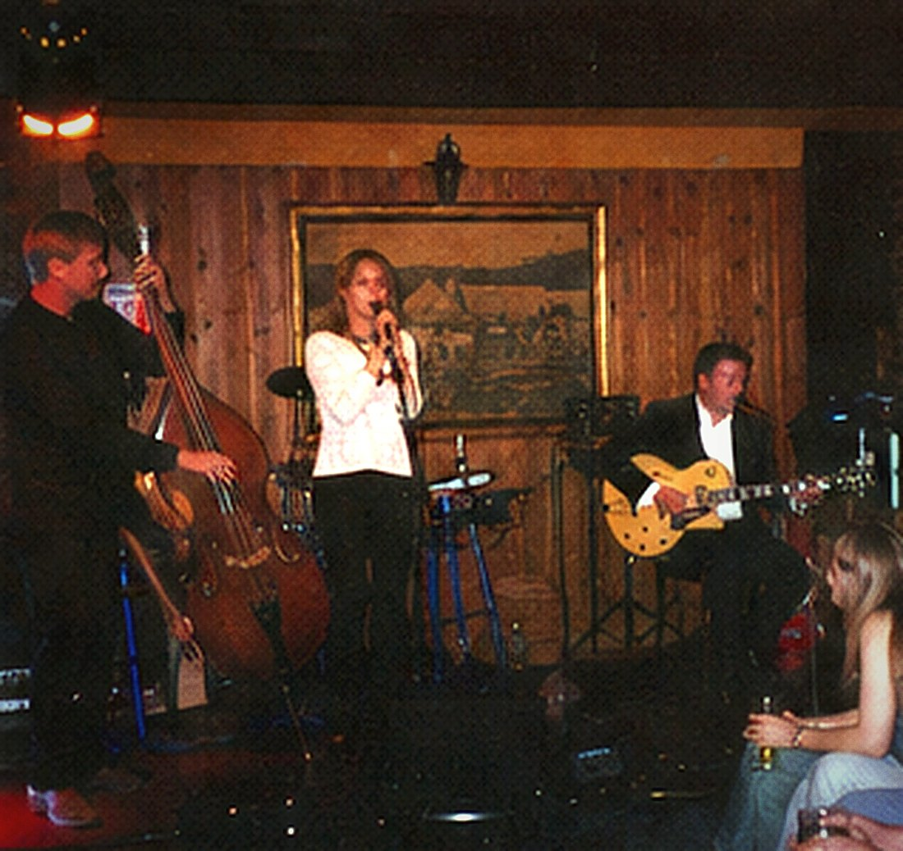
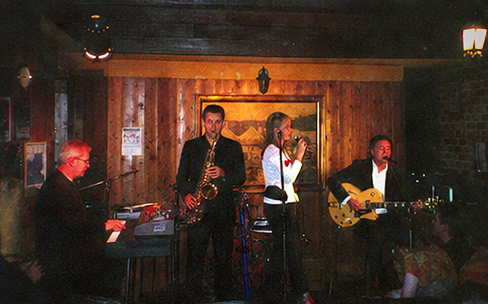
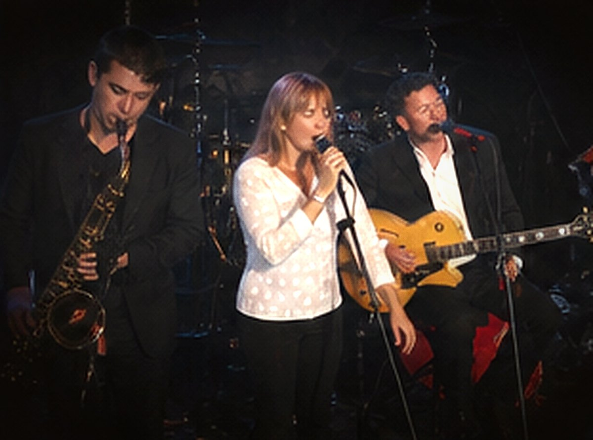
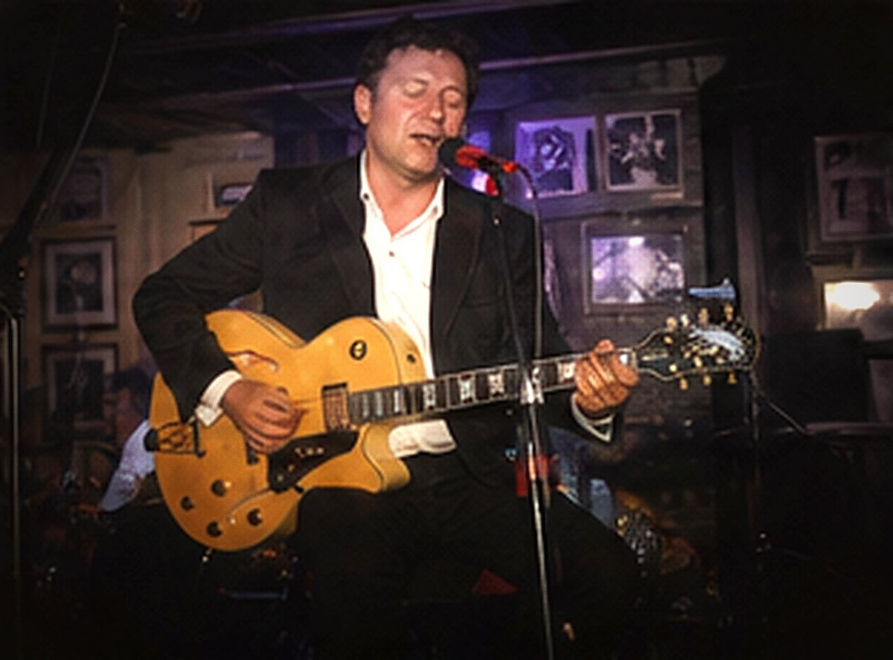
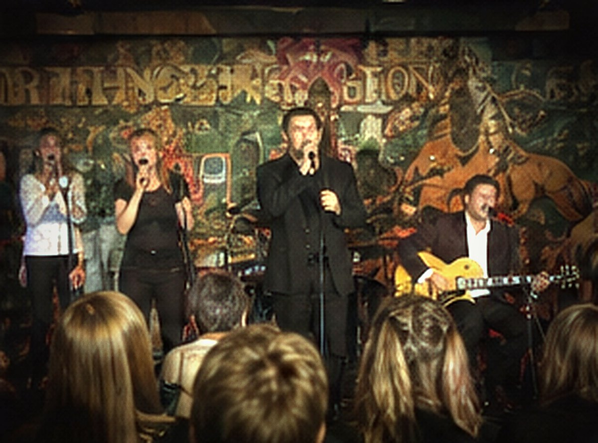

The Band
Nobody has ever auditioned. A departing Tendertone nominates the person who takes the chair, and the band takes them.
Frankie Velvet
1991–
Born Francis Xavier Velletri in Preston in August 1961, to a tiler from Reggio Calabria and a piano teacher from Ballarat. Eleven years of lessons, which he says were wasted on the technique and worth it for the manners.
He sold photocopiers from 1983 to 1994 and above-ground swimming pools from 2001 to 2004, and has never put singing down as his occupation on a form. He performed as Frank Vallory in 1984 and as Frankie Vellini and the Continentals from 1988, an act consisting entirely of himself.
White dinner jacket, oxblood shirt, no tie since 1997. Hand-held microphone, never on the stand. He lives in Reservoir, four streets from where he was born, and drives a 1994 Ford Fairlane the band calls the Office.
“People call us a nostalgia act. Nostalgia is when you miss something. We never stopped.” Still Tender, 2022
Six Tendertones and three Velvettes.
As at September 2026.

Warren Tiplady
Drums · Joined 1997
A refrigeration engineer by trade, and the longest-serving Tendertone now playing. He broke a stick and a snare head on the same night in Palmerston North in September 1998 and has played brushes ever since. He owns eleven pairs and keeps them in a cutlery tray.

Marco Reis
Double bass, electric bass · Joined 2011
He was in the third row at the Casino Estoril in July 2008, having come for the DJ, and followed the band around the Lisbon coast for three summers before anybody learned his name. Kevin Hallward nominated him on retiring, on the grounds that he was there anyway.
He lives in Cascais and comes over for the season, with the bass in a case he built.

Delphine Auguste
Hammond organ, backing voice, arrangements · Joined 2013
Fifteen years a church organist in Footscray before a Tuesday night at the Palais Rialto changed the course of her Sundays. She is the band’s only formally trained musician and its only arranger, and is responsible for The Velvet Songbook, which she proposed, costed and booked before mentioning it to anyone.
She sets the organ to the same three drawbars every night and will not say which.

Bettina Croll
Tenor saxophone · Joined 2017 · Bookings and accounts
She had kept the band’s books since 2009 and played tenor only at home. Nino Pesic nominated her to succeed him in a letter dated March 2016, which he gave to Del Auguste to hold, and which nobody else saw until the following November. She took the chair a year after his death, and still does the accounts.

Lionel Bright
Guitar · Joined 2021
Nineteen when he joined, and the youngest Tendertone by twenty-six years. A recording of him playing “Nino’s Waltz” alone in a garage in Sunshine reached the band by three unconnected routes in the same week in March 2021, and Stefan Kolar, who had been looking for a reason to retire, nominated him without meeting him.
He plays the band’s archtop, bought second-hand in Preston in 1993. He is the fifth person to have it.

The Velvettes
Backing voices · Rhonda Pike and Marj Delahunty, 1995 · Kaye Osborne, 2006
Never billed individually, at their own request, since their first engagement in October 1995. Pike and Delahunty met at a bowls club in Preston and joined on the condition that they would not be separated in the running order. Osborne joined at sea in 2006.
They stand stage left, in that order, and have done for thirty-one years.
Ivan Pesic
He played tenor saxophone with this band for twenty-five years and one month, from the night he walked in to look at an air-conditioning unit to a Thursday in Coburg eleven days before he died. He did not miss an engagement in that time — not through the cruise seasons, and not through the years when there were no engagements and he came round to Frankie’s flat on Thursdays anyway with the horn in the car.
After his death in November 2016 the band played the whole of the following year with a stand, a microphone and an empty chair set stage right. Fifty-two engagements. It was not mentioned from the stage.
“He came to fix the cooling. I have never been able to improve on that.” Frankie Velvet, Northcote Town Hall, 19 November 2016
1991 to 2026.
Thirty-one musicians. Four of them served twice.
- Frankie Velvet1991–
- Lorraine Petch1994–1998
- Rhonda Pike1995–
- Marj Delahunty1995–
- Yolanda Prewitt1999–2004
- Suzanne Marchetti2005–2007
- Kaye Osborne2006–
- Ivan Pesic — tenor1991–2016
- Vince Amato — trumpet1995–1999
- Georgina Aspinall — flute, alto2006–2009
- Bettina Croll — tenor2017–
- Barry Sloane1991–2000, 2004–2012
- Ray Mifsud2012–2013
- Delphine Auguste2013–
- Col Brindle1996–2003
- Neil Torpey2003–2010
- Stefan Kolar2010–2021
- Lionel Bright2021–
- Sonny Kane1993–1996
- Terry Ng1996–2001
- Kevin Hallward2001–2011
- Marco Reis2011–
- Ken Pantelis1991–1992
- Dougie Farr1992–1996
- Alby Frean1997–2000
- Warren Tiplady1997–
- Bruno Salgado2008–2015
- Danny Vuong2016–2019
Anyone who completes a full engagement is counted. Five names are on the list on that basis: Ted Mullane (organ, one night, 1998), Pat Whelan (drums, two nights, 2002), Simone Baïa (voice, one night, Estoril, 2008), Hartmut Bell (tambourine, one night, Berlin, 2014) and Norm Castellan, who was never in the band and is listed first in every printed programme.
How it runs.
There is no manager, no agent and nothing in writing. There is thirty-five years of settled habit.
- Jacketswhite, since 1994
- Shirtsoxblood
- Tiesnone since 1997
- RehearsalThursdays, Frankie’s flat
- Setstwo of fourteen
- Intervaltwenty minutes
- Paymentdivided equally, deputies included
- Last songslow